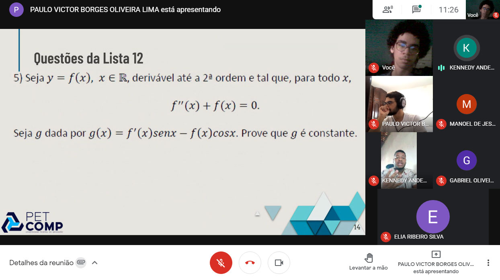
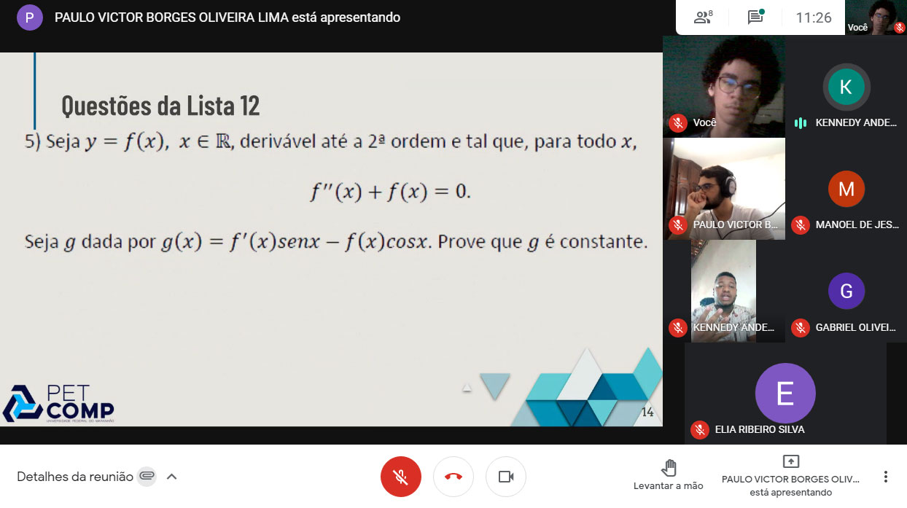

Monitoria
Visando combater problemas, como o alto índice de evasão dos cursos da área de tecnologia e o baixo rendimento dos alunos nas primeiras disciplinas que envolvem computação e cálculo, foi criado o GAD (Grupo de Acompanhamento de Discentes). Essa atividade serve como um grupo de estudos para os discentes que estão com dificuldade, além de ajudar na interação dos mesmos com outros alunos de períodos mais avançados do curso. Assim, ajudando e motivando os discentes a continuar no curso e a se interessar pelas disciplinas: Algoritmos 1, Cálculo 1 e Linguagem de Programação 1, sendo essas disciplinas de grande importância para o curso. Essa atividade, além de trazer o ensino e extensão, também envolve a pesquisa trazendo a formação criativa de novas práticas de ensino, apresentação e defesa de resultados.
A atividade é realizada 3 vezes por semana, durante duas horas em uma sala do Google Meet criada previamente. Os petianos responsáveis pela atividade ficam a disposição para responder as perguntas surgidas durante a aula e/ou durante a resolução dos exercícios e passam exercícios sobre o atual assunto dado naquele momento da disciplina que podem ser respondidos durante a monitoria ou em um momento posterior. Ao final do semestre, que é quando acaba a monitoria, é dado um formulário para os alunos darem suas opiniões sobre a monitoria, possíveis formas de melhorar a explicação e abordagem do assunto e quais foram as dificuldades enfrentadas durante a monitoria.
Os principais resultados esperados após a realização dessa atividade são melhoria no rendimento dos discentes que participaram das monitorias, o desenvolvimento de novas metodologias de ensino e uma maior união dos petianos com o resto dos discentes do curso. Os arquivos da monitoria podem ser vistos neste link.
 
